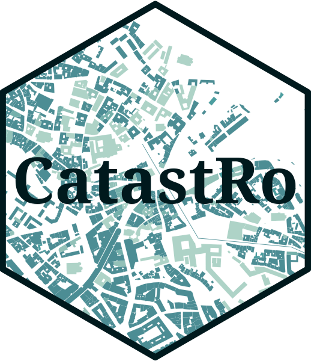

Changelog
Source:NEWS.md
CatastRo 0.3.1
CRAN release: 2024-04-12
- Migrate from httr to httr2 (#44), no visible change for users.
- Improve documentation.
CatastRo 0.3.0
CRAN release: 2024-01-18
-
catr_atom_get_address()returns also the names of the streets (layer"ThoroughfareName"of the*.gmlfile). The new fields are named with the prefixtfname_*. - Add a helper function for easy detecting the
cache_dir:catr_detect_cache_dir(). - Update documentation and tests.
CatastRo 0.2.3
CRAN release: 2023-01-08
- Housekeeping and update of documentation.
- Adapt
catr_wms_get_layer()to mapSpain (>= 0.7.0).
CatastRo 0.2.2
CRAN release: 2022-05-27
- Add tidyterra to ‘Suggests’.
- Now
catr_get_code_from_coords()handlesfcobjects (#26). -
catr_clear_cache()now hasconfig = FALSEad default parameter.
CatastRo 0.2.0
CRAN release: 2022-02-28
Overall revamp of the package. Major changes on the API.
- Add ATOM INSPIRE capabilities:
- Addresses:
catr_atom_get_address(),catr_atom_get_address_db_all(). - Cadastral Parcels:
catr_atom_get_parcels(),catr_atom_get_parcels_db_all(). - Buildings:
catr_atom_get_buildings(),catr_atom_get_buildings_db_all().
- Addresses:
- Add WFS INSPIRE capabilities:
- Addresses:
catr_wfs_get_address_bbox(),catr_wfs_get_address_codvia(),catr_wfs_get_address_postalcode(),catr_wfs_get_address_rc(). - Cadastral Parcels:
catr_wfs_get_parcels_neigh_parcel(),catr_wfs_get_parcels_parcel(),catr_wfs_get_parcels_parcel_zoning(),catr_wfs_get_parcels_zoning(). - Buildings:
catr_wfs_get_buildings_bbox(),catr_wfs_get_buildings_rc().
- Addresses:
- Add WMS INSPIRE capabilities:
catr_wms_get_layer(). - New interface for OVC Services. Deprecate previous functions in favor of the new API:
- New SRS database on
catr_srs_values, replacescoordinates. -
catr_ovc_get_rccoor_distancia()replacesnear_rc(). -
catr_ovc_get_rccoor()replacesget_rc(). -
catr_ovc_get_cpmrc()replacesget_coor().
- New SRS database on
- Add pre-computed vignettes.